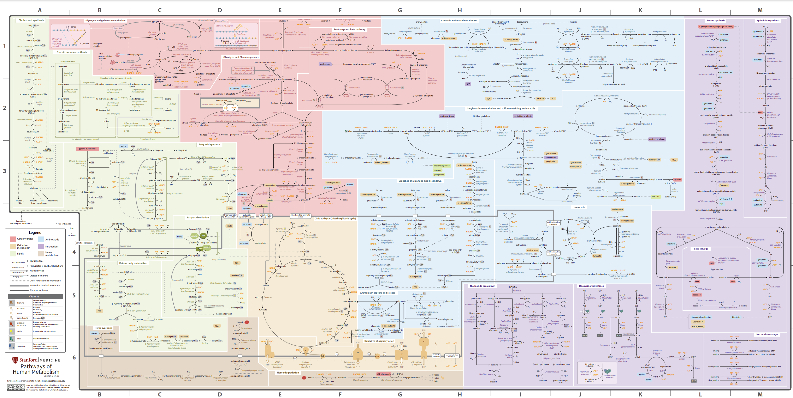

What are metabolic pathways?
In short, metabolic pathways - in regards to food - relate to how food is digested in the body. In class, we will be going over all of the pathways for each individual nutrient - whether its a carb, lipid, protein, you name it!
The Metabolic Pathway Map
Now its imporant to know that, while we are covering them one at a time, these pathways all help and feed into each other. Below is a map to demonstrate how these pathways are all interconnected. Don't worry, this is more than you need to know for the class.
Hover over to zoom in!
